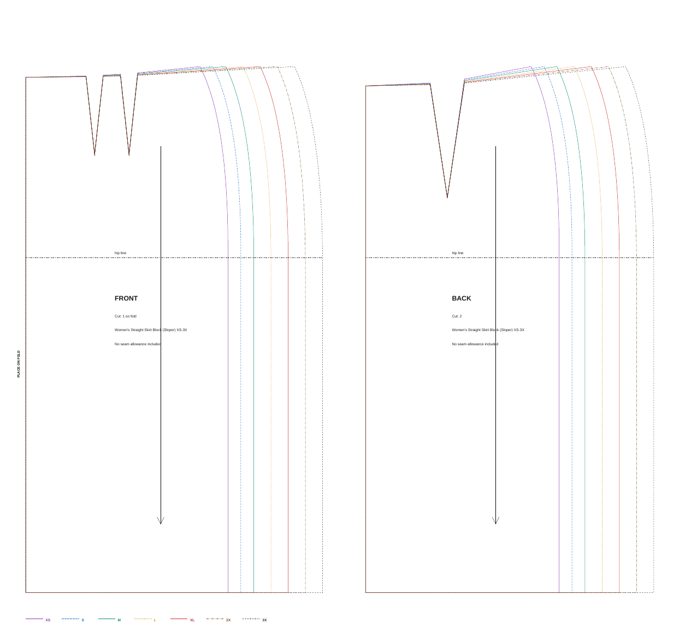

Women's Straight Skirt Block (Sloper) XS-3X
Nested sizes XS–3X · no seam allowance · print at home (A4/Letter) or copy shop (A0)

Size chart (body measurements)
| Size | Bust | Waist | Hip | Hip depth |
|---|
| XS | 80 cm / 31.5" | 62 cm / 24.4" | 88 cm / 34.6" | 20.0 cm |
| S | 86 cm / 33.9" | 68 cm / 26.8" | 94 cm / 37.0" | 20.5 cm |
| M | 92 cm / 36.2" | 74 cm / 29.1" | 100 cm / 39.4" | 21.0 cm |
| L | 100 cm / 39.4" | 82 cm / 32.3" | 108 cm / 42.5" | 21.0 cm |
| XL | 108 cm / 42.5" | 90 cm / 35.4" | 116 cm / 45.7" | 21.5 cm |
| 2X | 116 cm / 45.7" | 98 cm / 38.6" | 124 cm / 48.8" | 22.0 cm |
| 3X | 124 cm / 48.8" | 106 cm / 41.7" | 132 cm / 52.0" | 22.0 cm |
The block includes 4 cm (1.5 in) ease at the hip and 1 cm at the waist. Skirt length 60 cm (23.5 in); lengthen or shorten at the hem.
Before you start
- This is a block (sloper): a basic fitted shape with ease for movement, used as the starting point for your own skirt designs. It has no seam allowance and no waistband or zip.
- Always sew a quick test version (a muslin or toile) in cheap cotton first. Every body is different, and a block is meant to be adjusted to you.
Printing
- Print the A4 or Letter file at 100% / actual size (no 'fit to page').
- Measure the test square on page A1: it must be 5 cm or 2 in.
- Trim one side and one top edge of each page along the grey frame and tape the pages together by their labels (A1, A2, B1...).
- Or send the A0 file to a copy shop.
Choosing your size
Measure your hips at the fullest part and your waist at the narrowest. For a skirt, choose the size by your hip. If your waist is a different size, blend between the two size lines from hip line to waist (take in or let out the side seam and the darts).
Cutting
- Trace your size onto paper first and add your own seam allowance (1.5 cm / 5/8 in is common).
- Front: cut 1 on the fold. Back: cut 2 (centre back seam for a zip).
- Mark darts and the hip line.
Sewing a test skirt
- Sew the darts, pressing them toward the centre.
- Sew the centre back seam, leaving 20 cm open at the top.
- Sew the side seams.
- Try it on, pinning the back opening closed.
Fitting tips
- Too tight at the hip: let out the side seams evenly.
- Gaping at the waist: take in the darts a little more, or the side seam at the waist.
- Pulls across the bottom: add a little width to the back at the hip line.
- Hem not level: mark a level hem while wearing it, then copy it to the pattern.
- Transfer every change back to your paper block. Now you have a block made for you.
From block to designs
- Pencil skirt: take in the side seam 2–3 cm at the hem.
- A-line skirt: close the dart, slash from hem to dart point and open the hem.
- Add a waistband: a rectangle as long as your waist + 3 cm, 7 cm wide, folded.
© AureliaVenn · Personal use and small-batch handmade sales. Please don't share or resell the pattern files. Drafted with the help of software from a standard size chart.